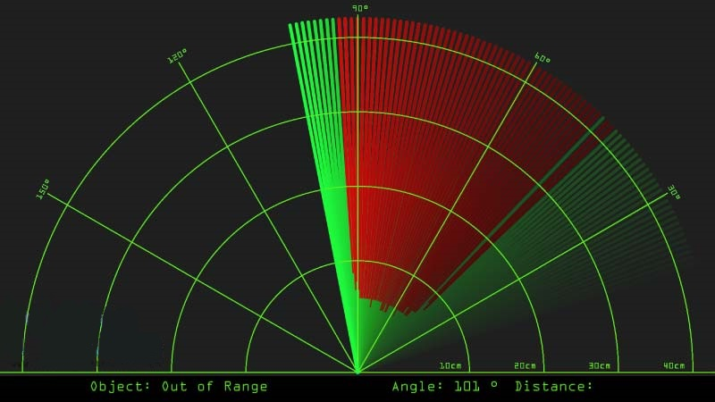

.jpeg)
.jpeg)
.jpeg)
Basicamente o que foi utilizado para este Projeto Arduino: um Sensor Ultrassônico para detectar os objetos,um pequeno servo motor para girar o sensor e uma placa Arduino para controlá-los.

|
|
|
|

Aqui está o código fonte do Arduino com a descrição de cada linha:
// Includes the Servo library
#include <Servo.h>.
// Defines Tirg and Echo pins of the Ultrasonic Sensor
const int trigPin = 10;
const int echoPin = 11;
// Variables for the duration and the distance
long duration;
int distance;
Servo myServo; // Creates a servo object for controlling the servo motor
void setup() {
pinMode(trigPin, OUTPUT); // Sets the trigPin as an Output
pinMode(echoPin, INPUT); // Sets the echoPin as an Input
Serial.begin(9600);
myServo.attach(12); // Defines on which pin is the servo motor attached
}
void loop() {
// rotates the servo motor from 15 to 165 degrees
for(int i=15;i<=165;i++){
myServo.write(i);
delay(40);
distance = calculateDistance();// Calls a function for calculating the distance measured by the Ultrasonic sensor for each degree
Serial.print(i); // Sends the current degree into the Serial Port
Serial.print(","); // Sends addition character right next to the previous value needed later in the Processing IDE for indexing
Serial.print(distance); // Sends the distance value into the Serial Port
Serial.print("."); // Sends addition character right next to the previous value needed later in the Processing IDE for indexing
}
// Repeats the previous lines from 165 to 15 degrees
for(int i=165;i>15;i--){
myServo.write(i);
delay(40);
distance = calculateDistance();
Serial.print(i);
Serial.print(",");
Serial.print(distance);
Serial.print(".");
}
}
// Function for calculating the distance measured by the Ultrasonic sensor
int calculateDistance(){
digitalWrite(trigPin, LOW);
delayMicroseconds(2);
// Sets the trigPin on HIGH state for 10 micro seconds
digitalWrite(trigPin, HIGH);
delayMicroseconds(10);
digitalWrite(trigPin, LOW);
duration = pulseIn(echoPin, HIGH); // Reads the echoPin, returns the sound wave travel time in microseconds
distance= duration*0.034/2;
return distance;
}
Para desenhar o radar, foi utilizado o programa "Processing". Assim, foi necessário receber os valores para o ângulo e a distância medida pelo sensor da placa do Arduino para o IDE de processamento usando
a função SerialEvent () que lê os dados da porta serial e coloca os valores do ângulo e da distância nas variáveis iAngle e iDistance.
Essas variáveis foram usadas para desenhar o radar, as linhas, os objetos detectados e parte do texto.
void drawRadar() {
pushMatrix();
translate(960,1000); // moves the starting coordinats to new location
noFill();
strokeWeight(2);
stroke(98,245,31);
// draws the arc lines
arc(0,0,1800,1800,PI,TWO_PI);
arc(0,0,1400,1400,PI,TWO_PI);
arc(0,0,1000,1000,PI,TWO_PI);
arc(0,0,600,600,PI,TWO_PI);
// draws the angle lines
line(-960,0,960,0);
line(0,0,-960*cos(radians(30)),-960*sin(radians(30)));
line(0,0,-960*cos(radians(60)),-960*sin(radians(60)));
line(0,0,-960*cos(radians(90)),-960*sin(radians(90)));
line(0,0,-960*cos(radians(120)),-960*sin(radians(120)));
line(0,0,-960*cos(radians(150)),-960*sin(radians(150)));
line(-960*cos(radians(30)),0,960,0);
popMatrix();
}
Para desenhar a linha que está se movendo ao longo do radar, foi feito a função drawLine (). Seu centro de rotação foi definido com a função translate () e usando a função line (), na qual a variável iAngle é usada, a linha é redesenhada para cada grau.
void drawLine() {
pushMatrix();
strokeWeight(9);
stroke(30,250,60);
translate(960,1000); // moves the starting coordinats to new location
line(0,0,950*cos(radians(iAngle)),-950*sin(radians(iAngle))); // draws the line according to the angle
popMatrix();
}
Para desenhar os objetos detectados, foi utilizado a função drawObject (). Ela obtém a distância do sensor ultrassônico, transforma-o em pixels e, em combinação com o ângulo do sensor, desenha o objeto no radar.
void drawObject() {
pushMatrix();
translate(960,1000); // moves the starting coordinats to new location
strokeWeight(9);
stroke(255,10,10); // red color
pixsDistance = iDistance*22.5; // covers the distance from the sensor from cm to pixels
// limiting the range to 40 cms
if(iDistance<40){
// draws the object according to the angle and the distance
line(pixsDistance*cos(radians(iAngle)),-pixsDistance*sin(radians(iAngle)),950*cos(radians(iAngle)),-950*sin(radians(iAngle)));
}
popMatrix();
}
Para o texto na tela, foi utilizado a função drawText () , que desenha textos em locais específicos. Todas essas funções são chamadas na função draw () principal, que se repete o tempo todo e desenha a tela. Também aqui foi utilizada a função fill () com 2 parâmetros para simular o desfoque de movimento e o desvanecimento lento da linha em movimento.
void draw() {
fill(98,245,31);
textFont(orcFont);
// simulating motion blur and slow fade of the moving line
noStroke();
fill(0,4);
rect(0, 0, width, 1010);
fill(98,245,31); // green color
// calls the functions for drawing the radar
drawRadar();
drawLine();
drawObject();
drawText();
}
Aqui está a aparência final do radar:
A maior das dificuldades foi descartada, pois, como não possuia os conhecimentos necessários para a criação dos códigos utilizados, os encontrei prontos no canal Indian LifeHacker. Outras dificuldades foram na montagem das componentes, mas que foi realizada com sucesso!
.jpeg)
.jpeg)
.jpeg)
-